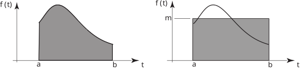

Long description: block6fig1

Alt text: Two graphs illustrate the concepts of average value and the area under a curve, comparing the area under a function to the area of a rectangle.
This description was generated by AI and has not been verified by a human. If you spot an error, please use the feedback link below.
- The image displays two side-by-side graphs plotted with time, labeled \(t\), on the horizontal axis and a function value, labeled \(f(t)\), on the vertical axis.
- The graph on the left shows a curve that starts at some height at \(t=a\) and decreases to a lower height at \(t=b\).
- Under this curve, a shaded region is filled in, representing the area under the curve between \(t=a\) and \(t=b\).
- The graph on the right shows a curve that starts at a height at \(t=a\), reaches a peak, and then decreases to a lower height at \(t=b\).
- Below this curve, a rectangle is shaded, drawn from \(t=a\) to \(t=b\) and having a constant height labeled \(m\).
- The context suggests that the area under the curve shown in both graphs is being compared to the area of a rectangle, whose height is \(m\), implying the relationship that the average value of the function is \(m\).